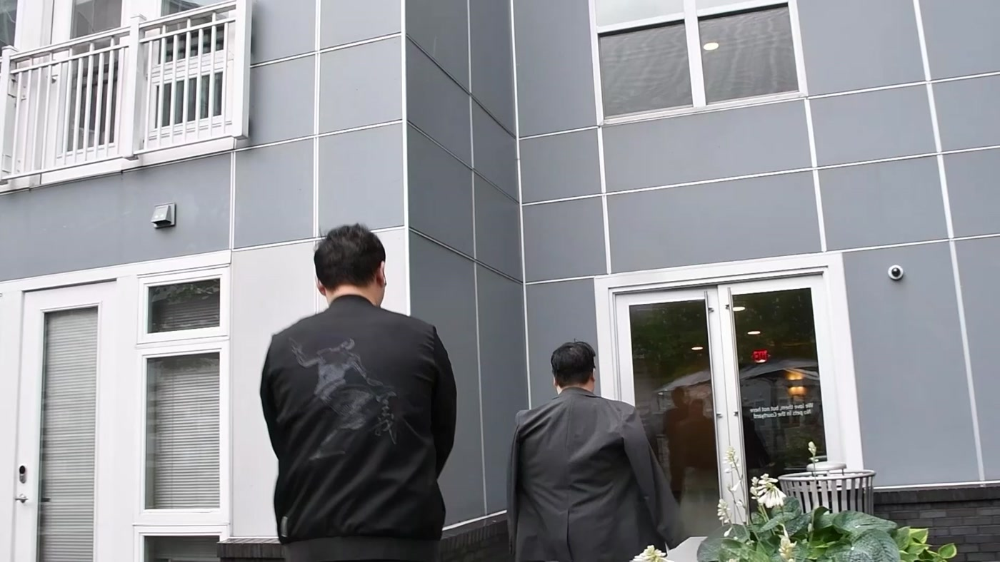
主要作品 · 剧情短片各怀心思的谈判Fine Print
两个人带着各自的盘算坐上谈判桌，最终未能达成一致。在完整剧情中自然融入指定道具“铅笔”和指定台词，练习场景逻辑与人物关系。
创作重点
围绕“谈判未能达成”组织情节，让人物动机、对话与道具在同一场景中自然成立。把课程设定转化为叙事条件，展示完整故事的构思与后期组织能力。
使用工具Adobe Premiere Pro（剪辑） · 剪映（特效与字幕）
在哔哩哔哩观看 ↗从故事构思到拍摄剪辑，
也探索让故事可以互动的方式。
目前就读于美国东北大学数字媒体专业硕士，本科毕业于上海外国语大学网络与新媒体专业。
我的主要方向是视频内容制作，关注选题、脚本、镜头和剪辑如何共同讲好一个故事。曾在新浪等新媒体团队参与内容生产，熟悉从创意、拍摄、后期到审核的协作流程。
在影像之外，我也通过交互游戏与网页设计，探索故事的参与感与信息的清晰表达。
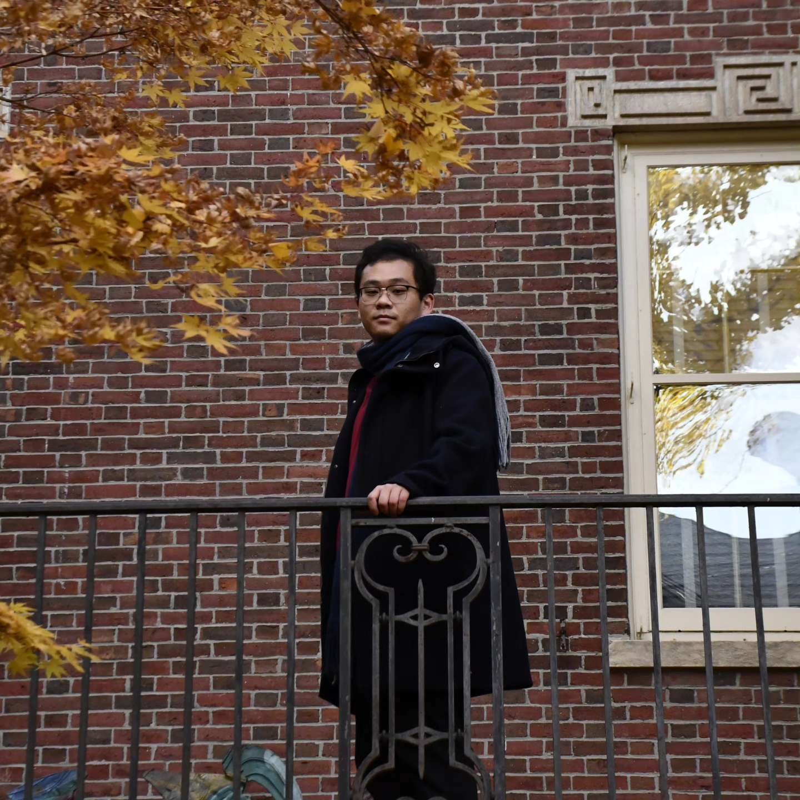
从故事构思到后期剪辑，
通过不同形式练习节奏与叙事。

主要作品 · 剧情短片两个人带着各自的盘算坐上谈判桌，最终未能达成一致。在完整剧情中自然融入指定道具“铅笔”和指定台词，练习场景逻辑与人物关系。
围绕“谈判未能达成”组织情节，让人物动机、对话与道具在同一场景中自然成立。把课程设定转化为叙事条件，展示完整故事的构思与后期组织能力。
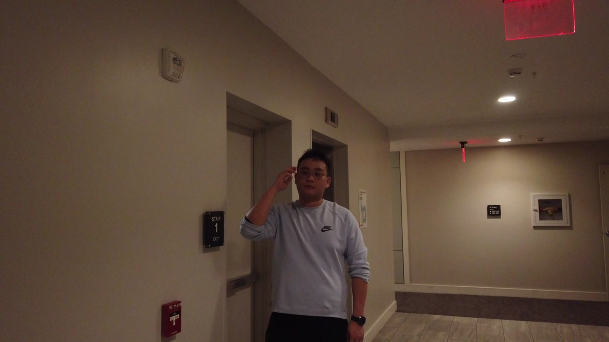
两部曲 ↗第一部在不剪辑的限制下讲清故事；第二部通过补充背景故事，重新组织叙事。负责剧本、分镜、拍摄及第二部剪辑，同学参与表演。
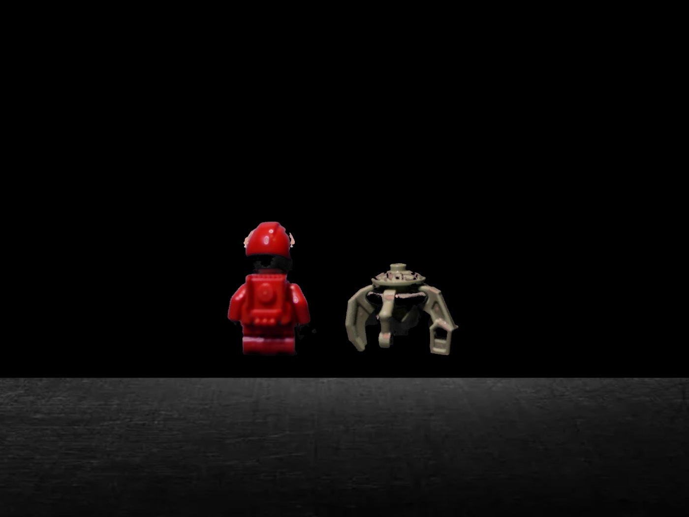
动画 ↗把实体拍摄的定格动画与 After Effects 动画结合，探索真实物体与数字画面之间的衔接。以逐帧拍摄建立动作，再通过数字动画与合成形成完整画面。
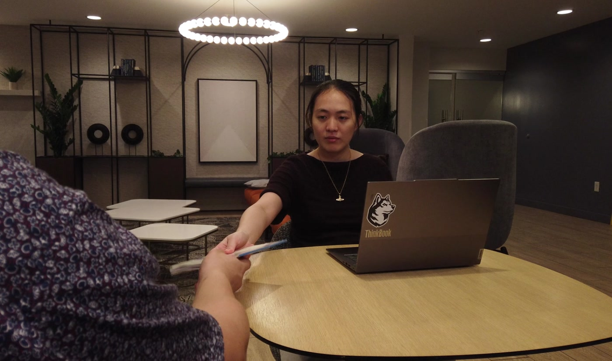
音乐影像 ↗以课程提供的音乐为起点，拍摄和组织素材，让音乐与镜头节奏共同营造观看感受。重点不在制作传统音乐录像，而在镜头选择、素材组织与声音配合。
参与真实团队制作，
把创意落实为正式发布的内容。
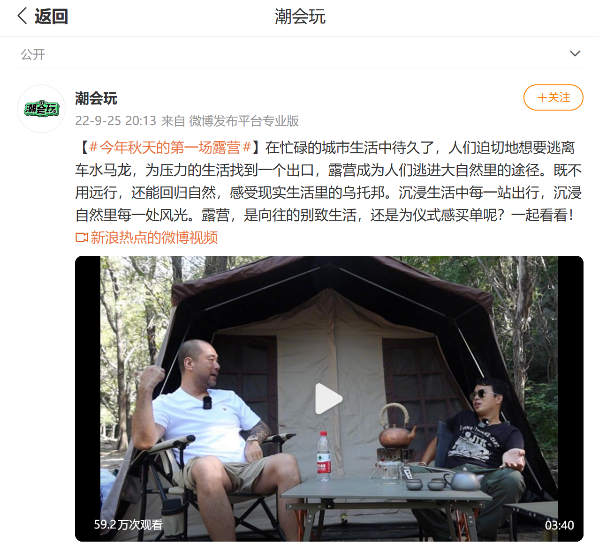
正式发布 · 新浪实习作品围绕两种露营方式展开内容，以人物交流呈现不同的生活态度。作品发布于微博“潮会玩”账号。结合人物交流与露营场景，把选题落实为面向新媒体平台的成片。
在新浪移动产品运营部门实习期间参与视频内容制作，经历脚本构思、拍摄、后期与主管审核的协作流程。该作品所提供的发布截图显示约59.2万次观看，为截图时的历史数据。
让读者成为参与者，
用探索、选择和数值推动故事。
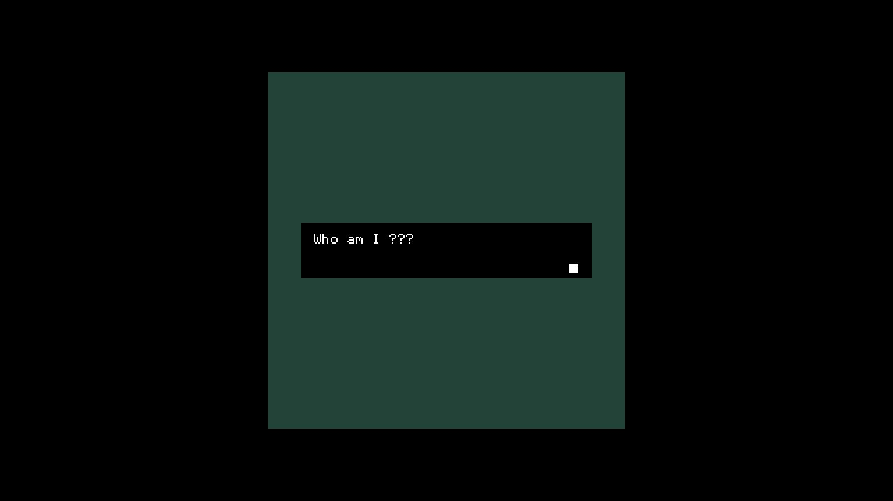
主要作品 · 期末项目以像素场景与文字推进故事，把叙事从“观看”转变为“参与”。这是数字叙事课程的期末作品：通过场景、文字与玩家操作之间的配合，练习如何让信息随体验逐步呈现。
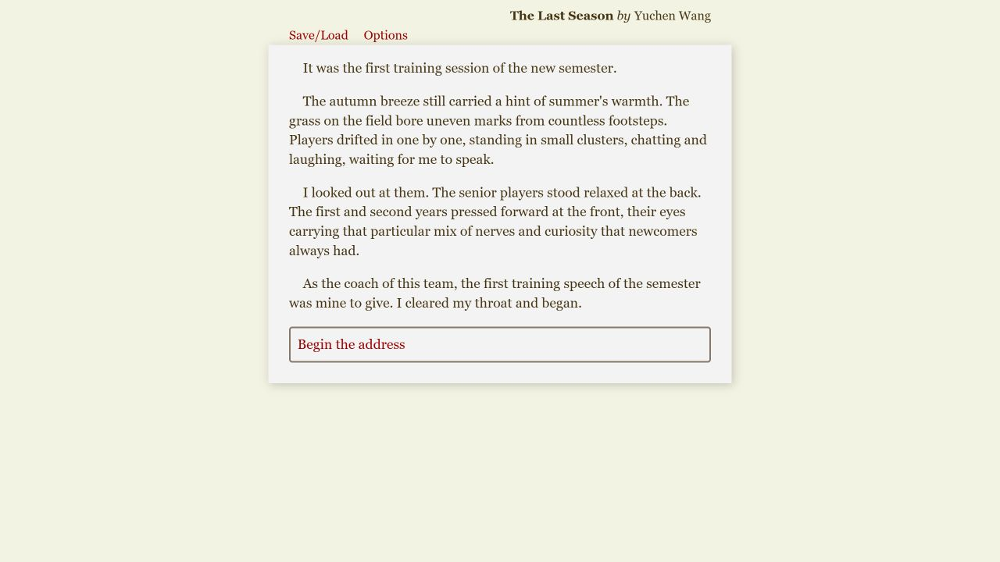
开始体验 ↗以球队教练的视角展开故事，在文字选择中引入数值记录与状态变化。以训练和团队情境探索文字叙事中的选择与反馈，也与我的球队教练经历形成呼应。
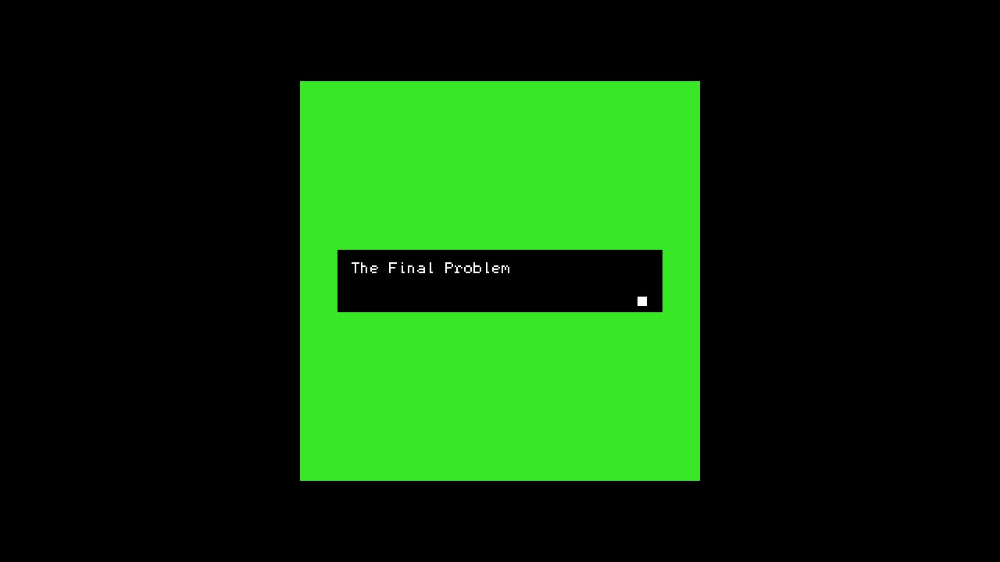
开始体验 ↗改编福尔摩斯“赖兴巴赫坠落”，探索文学情节如何转化为可参与的游戏叙事。将原作的场景与对话组织为像素空间中的体验，练习跨媒介改编。
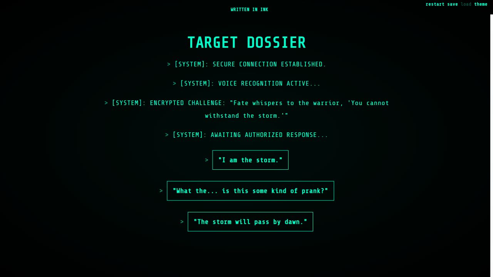
开始体验 ↗把个人经历转化为间谍风格的档案调查，用对话与选择重新设计自我介绍。将教育经历、兴趣和个人故事融入档案线索，让读者通过探索了解我。
从用户需要出发，
让信息更容易查找，让操作更容易理解。
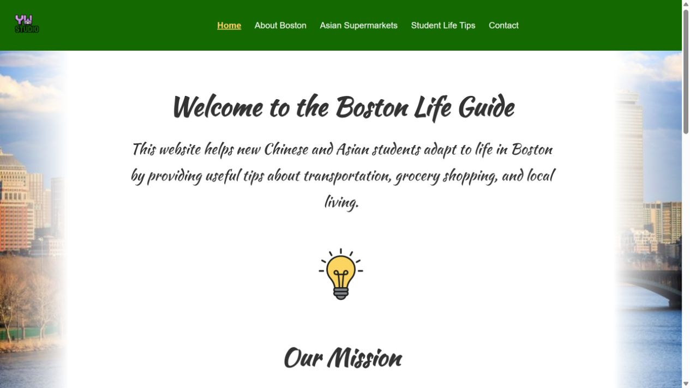
主要作品 · 内容型网站面向亚洲留学生，整理波士顿交通、亚洲超市与日常生活信息。通过清晰的页面分类，把收集到的资料转化为便于查阅的生活指南。按城市介绍、超市、生活建议等主题组织页面，并以图片和导航辅助信息定位。
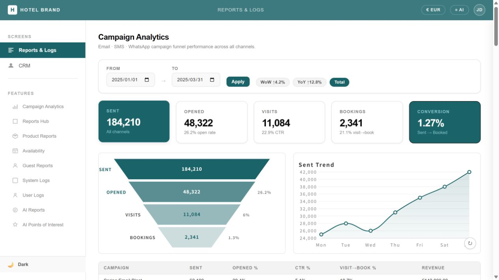
根据客户现有网页的使用问题，梳理需求，并通过提示词与功能规划，使用 Claude 辅助生成交互原型。通过需求梳理与提示词迭代，将客户反馈转化为报表、筛选、导航等界面方案。
我的工作：客户需求总结、提示词设计、功能设计思考。
这是课程原型，展示数据与功能不代表真实业务系统。
两个网站与四个游戏均随本作品集提供，无需跳转 Neocities。课程作品保留原始界面语言。